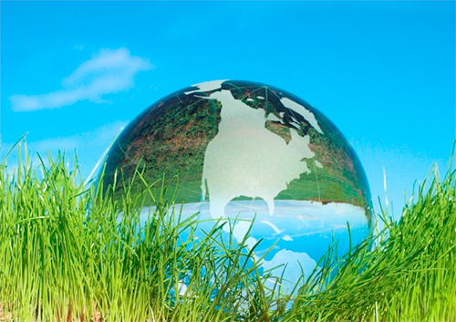

- Uso responsable y eficiente de recursos
- El desarrollo sostenible se preocupa por el uso eficiente de los recursos, sobre todo cuando se trata de recursos no renovables.
- Tecnologías limpias
- Trata de incorporar tecnologías limpias en sus procesos productivos, para tratar de reducir los niveles de contaminación.
- Protección de biodiversidad
- Se preocupa por la conservación de la biodiversidad. Es este un elemento clave en el contexto actual, con grandes desafíos por enfrentar,
como el cambio climático, el adelgazamiento de la capa de ozono o la emergencia de patógenos que ocasionan enfermedades graves.
- Reciclaje
- SPromueve el reciclaje y la reutilización de los materiales de uso masivo (algunos ejemplos: envoltorios de papel y cartón, botellas plásticas,
tapas de plástico, recipientes de vidrio), acoplado esto a la disposición clasificada de los residuos.

- Reparación de daños al medio ambiente
- Se preocupa por restaurar los ecosistemas dañados. El primer paso para ello es conocer muy bien la dinámica de esos ecosistemas, para lo cual
dispone de especialistas que los estudian con rigor científico.
- Predicción de impactos medioambientales
- El desarrollo sustentable buscar mantener una intensa comunicación entre las áreas económica, tecnológica y medioambiental, a fin de predecir
los impactos de las medidas que se adopten, sobre todo a mediano y largo plazo.
- Mejora la calidad de vida de la sociedad
- Tiene presente que el mejoramiento en la calidad de vida debe ser para todos, todos los ciudadanos tienen derecho a vivir en un ambiente sano.
- Protección de ecosistemas
- Respeta y cuida a todas las comunidades de seres vivos, incluyendo peces, aves e insectos polinizadores, para mencionar algunos ejemplos.
| |
|
|